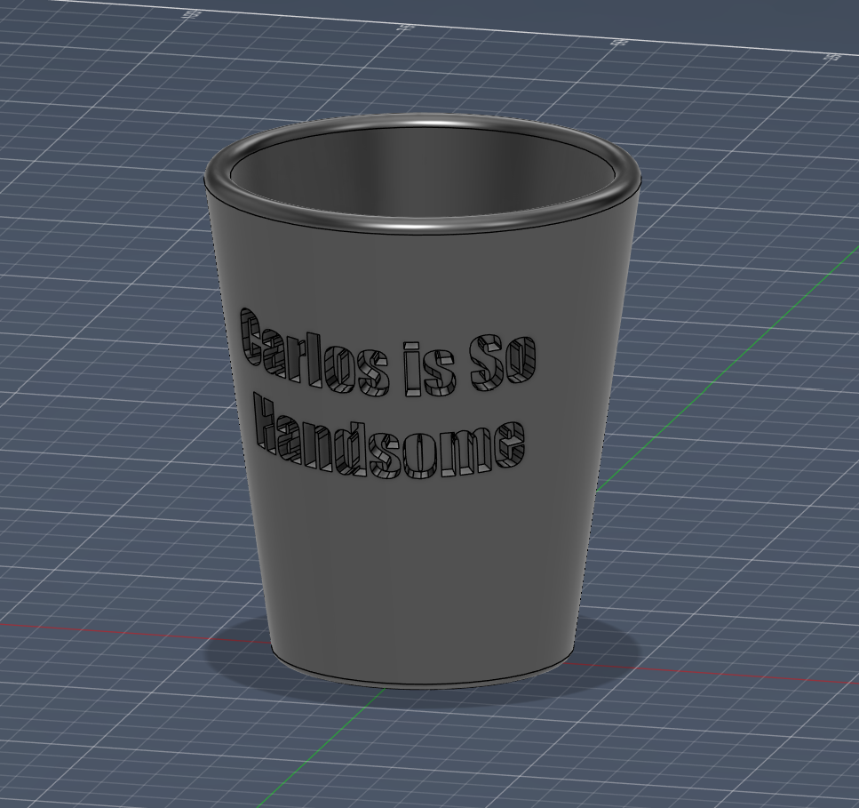
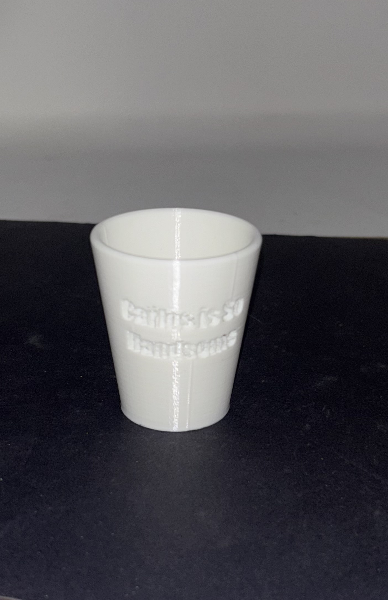

<div class="textcontainer">
<p class="margin"> </p>
<h3>Week 5: 3D Design & Printing</h3>
<h4>Assignment: Model and 3D print something</h4>
For this week, I made a small cup with a custom engraving. With the 3D print, I just wanted to make something that I could use.
I already display some small cups and this fits right in. I had no problems 3D modeling it and then printing.
<p></p>
<p></p>
The scan was a different story, I wanted to scan a lego skeleton at first, but the software was not recognizing the difference between the back and the front.
This was very frustrating and so I switched to scanning an onion stuffed animal. It was hard to get the legs because they would flop around when I put the onion on its side, but besdies that I had little issue with the onion.
<img src="onion.jpeg" alt="onion in real life" style="width: 30%; display: inline-block; margin: 5px;">
<img src="onionScanirl.jpeg" alt="scanned onion" style="width: 30%; display: inline-block; margin: 5px;">
<a download href='./Cup.stl'>Download my Cup STL file >
<a download href='./Merge_01_mesh.ply'>Download my onion mesh >
</div>